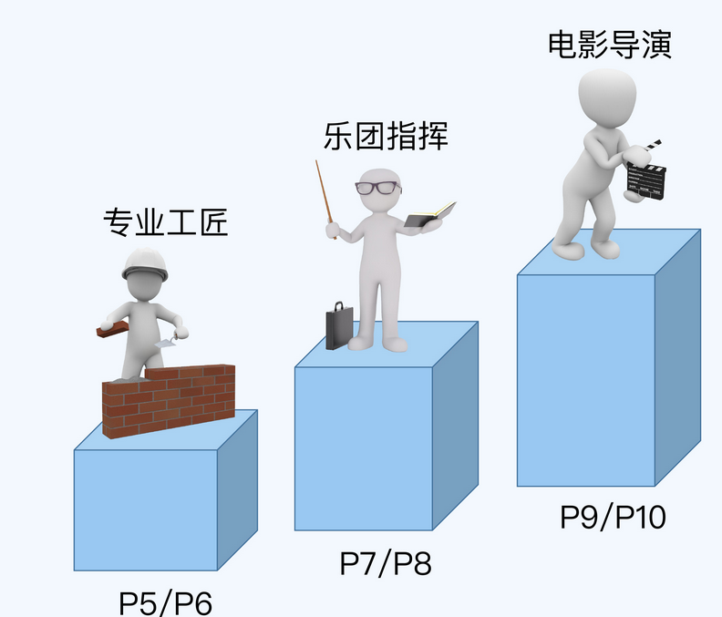

0、重新理解晋升
晋升体系
我会为你介绍职业等级体系和晋升的流程、原则、逻辑，然后结合自己总结的 COMD 能力评估模型，带你看透不同级别的要求。学完这一部分，你就能理解公司的晋升是怎样运作的，什么样的人可以晋升，怎么做才能更好地晋升。
职级详解
我会结合 COMD 能力模型，为你详细地解读从 P5 到 P9 每个级别的具体能力要求，以及每个级别晋升的关键点和技巧。学完这一部分，你就能“对号入座”，根据自己的级别做清晰明确的规划，采取更有效的行动来提升晋升的效率。
晋升技巧
我针对面评中的几个关键步骤，分享了很多实战技巧，包括怎么写 PPT、怎么讲 PPT、怎么回应答辩问题等等。学完这一部分，你就能充分地展现自己的能力，发挥出应有的水平。
学习方法
我总结了一套系统的学习方法论，涵盖时间管理、任务拆解、技术提升等多个维度，其中有很多我个人独创的理念和技巧。学完这一部分，你不但可以高效地提升能力，而且可以让自己的技能兼具深度、宽度和广度，更容易在晋升答辩的时候打动评委。
做事方法
我系统地总结了经过大量实践验证的做事方法，涵盖端到端的做事流程，包括定目标、执行、总结、汇报和复盘等环节。学完这一部分，你既能够在平时拿到更好的绩效，又能够在答辩的时候充分展现你的做事水平。
专项提升
随着级别的提升，理解业务和管理团队的能力越来越重要，而技术人员恰好缺少这方面的知识和经验。我把自己在业务和管理两大领域的技能和经验积累，提炼成了快速入门的套路。学完这一部分，你能更有效地掌握不同级别所需的业务理解能力，以及 50 人以内团队的管理技巧。
第一步，先完整地跟着课程的节奏学习一遍，对晋升形成整体的认知。
第二步，根据自己当前的情况，按图索骥寻找对应的章节深入学习并实践。
第三步，当你有了一定的实践经验之后，再来重新学习对应的章节，做到“知行合一”。
本博客所有文章除特别声明外，均采用 CC BY-NC-SA 4.0 许可协议。转载请注明来自 HelloWorld！